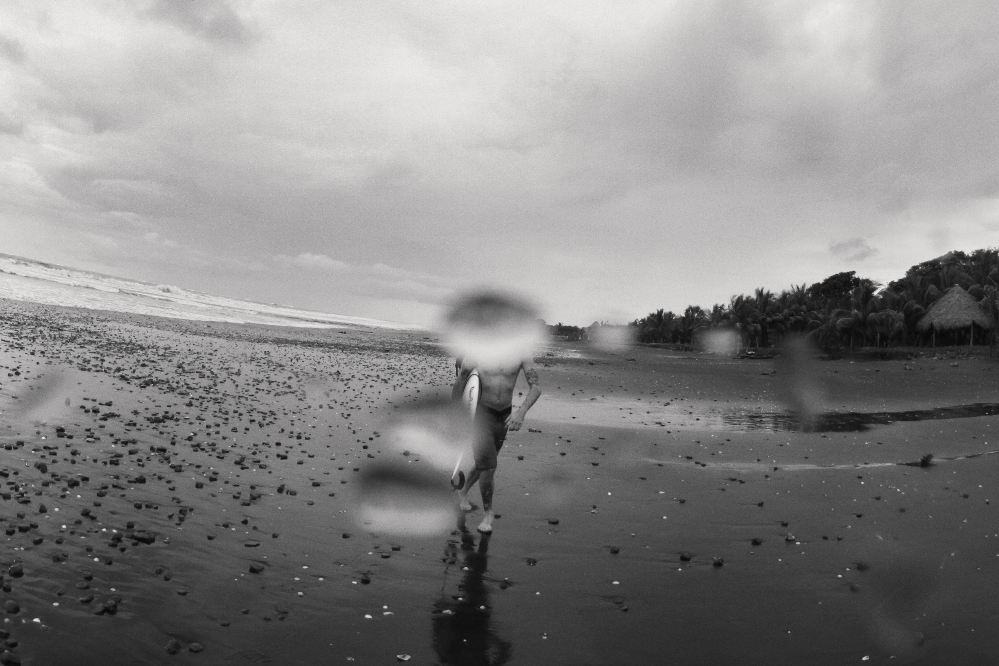

03 — About
Studio 410 is a New York retouching studio for images that need to hold up everywhere.
We partner with photographers, agencies, art directors, and brands to bring precision, restraint, and consistency to advertising imagery.
From refined skin and product work to complex composites, every image is approached with the final use in mind: a campaign hero, a retail environment, a printed page, or a screen viewed close-up.
Our process is collaborative and practical. We build clean, colour-managed files, keep versions clear, and make room for the detail work that gives an image its finish.
Studio 410 works across beauty, fragrance, automotive, fashion, watches, jewelry, liquids, packaging, OOH, and DOOH.

Tony Vargas Jr. — Founder
Tony's photography began early, with a Canon AE-1 given to him by his father. At twelve, he entered a magnet program at South Miami Middle School to study it formally, printing black and white in a classic darkroom — a discipline that carried through school and into a BFA in Photography from SVA, completed in 2011.
After graduating, he apprenticed at BOX Studios under Pascal Dangin, learning retouching from the ground up before ever having opened Photoshop. Sophie Norton later shaped his approach further, teaching him the discipline of beauty retouching.
He opened Studio 410 in 2020. His clients include Louis Vuitton, ZARA, Maison Margiela, Lancôme, Pandora, Nice & Frank, and Baron & Baron.